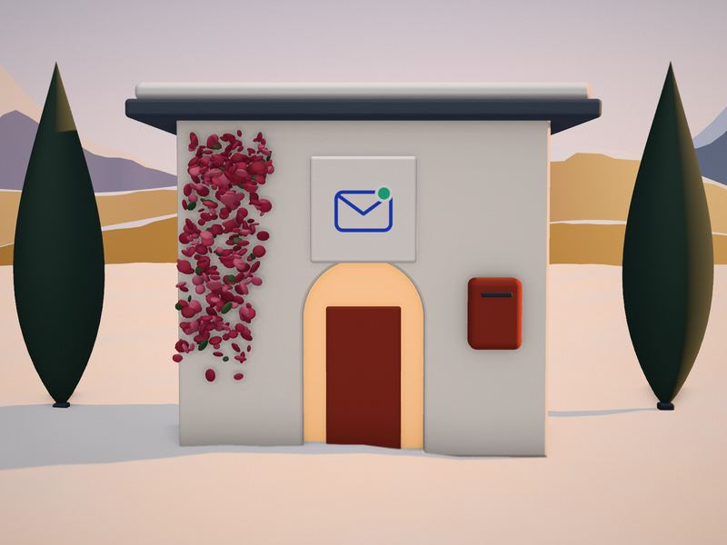

Albretsen ASNo. 01 — Winter light
I build software that pays for itself.
Asset kit 72 · Low Sun Terrace
A whitewashed house with falu‑red clapboard wings, built in 3D like a miniature set, on a snowy terrace above golden hills. Low winter sun. One slow camera move.